<title>Elementum Design Pass Research</title>
<meta name="claude:viewport-fit-sides" content="cover">
<link rel="preconnect" href="https://fonts.googleapis.com">
<link rel="stylesheet" href="https://fonts.googleapis.com/css2?family=Cinzel:wght@400;500;600&family=Cormorant+Garamond:wght@400;500;600&family=EB+Garamond:wght@400;500;600;700&family=Noto+Serif+SC:wght@400;600&display=swap">
<style>
/* Layout: one reading column on rice paper, like a handscroll unrolled downward.
   Single light theme on purpose: Elementum itself has only the paper theme. */
:root{
  --paper:#F1E9D6; --cream:#F8F6F0; --card:rgba(248,241,225,0.94); --hair:#CDBE9E; --quiet:#EBE5D6;
  --ink:#2B2722; --inkSoft:#4A433B; --inkLight:#6f6b66; --bronze:#8b7355; --bronzeDark:#6b5339;
  --seal:#A04030; --up:#4a7a52; --down:#a85c48;
  --metal:#6a849a; --wood:#587a4d; --fire:#9e5540; --earth:#927750; --water:#3e5f85;
  --display:'Cormorant Garamond',Georgia,serif; --body:'EB Garamond',Georgia,serif; --carve:'Cinzel',Georgia,serif; --han:'Noto Serif SC',serif;
  color-scheme:light;
}
*{box-sizing:border-box}
body{margin:0;background:var(--paper);color:var(--ink);font-family:var(--body);font-size:17px;line-height:1.6;
  padding-left:max(16px,env(safe-area-inset-left,0px));padding-right:max(16px,env(safe-area-inset-right,0px));padding-block:0 56px;}
.wrap{max-width:720px;margin:0 auto}
.hero{position:relative;margin:0 calc(-1 * max(16px,env(safe-area-inset-left,0px)));padding:56px max(16px,env(safe-area-inset-left,0px)) 36px;overflow:hidden}
.hero img.bg{position:absolute;inset:0;width:100%;height:100%;object-fit:cover;opacity:.55}
.hero .in{position:relative;max-width:720px;margin:0 auto}
.ey{font-family:var(--body);font-size:11px;font-weight:600;letter-spacing:2.5px;text-transform:uppercase;color:var(--bronzeDark)}
h1{font-family:var(--display);font-weight:400;font-size:44px;line-height:1.05;margin:8px 0 14px;text-wrap:balance}
h2{font-family:var(--display);font-weight:500;font-size:30px;line-height:1.15;margin:0 0 8px;text-wrap:balance}
h3{font-family:var(--display);font-weight:600;font-size:21px;line-height:1.2;margin:0 0 6px}
p{margin:0 0 12px}
.lede{font-size:19px;color:var(--inkSoft);max-width:34em}
section{padding-top:44px}
.sec-head{display:flex;align-items:baseline;gap:12px;margin-bottom:14px;border-bottom:1px solid var(--hair);padding-bottom:10px}
.sec-head .han{font-family:var(--han);font-size:22px;color:var(--bronze)}
.card{background:var(--card);border:1px solid var(--hair);border-radius:16px;padding:18px}
.quiet{background:var(--quiet);border:1px solid #DCD3C0;border-radius:12px;padding:14px 16px}
.grid2{display:grid;grid-template-columns:repeat(auto-fit,minmax(min(100%,300px),1fr));gap:12px}
.lock{display:flex;flex-wrap:wrap;gap:10px;align-items:center}
.lock figure{margin:0;display:flex;flex-direction:column;align-items:center;gap:4px;font-size:12px;color:var(--inkLight)}
.lock .bgthumb{width:64px;height:90px;object-fit:cover;border-radius:10px;border:1px solid var(--hair)}
.lock .dot{width:44px;height:44px;border-radius:50%;background-size:cover;display:grid;place-items:center}
.lock .dot svg{width:18px;height:18px;color:var(--ink)}
.lock .stem{width:70px;height:70px}
.lock .wheel{width:120px}
/* screenshot strip: horizontal shelf, peeking next card */
.shelf{display:flex;gap:12px;overflow-x:auto;scroll-snap-type:x mandatory;padding:4px 2px 14px;margin:0 calc(-1 * max(16px,env(safe-area-inset-left,0px)));padding-left:max(16px,env(safe-area-inset-left,0px));padding-right:16px}
.shelf figure{flex:0 0 172px;margin:0;scroll-snap-align:start}
.shelf img{width:172px;height:372px;object-fit:cover;object-position:top;border-radius:16px;border:1px solid var(--hair);display:block;background:var(--cream)}
.shelf figcaption{font-size:13px;color:var(--inkSoft);line-height:1.35;margin-top:6px}
.finding{display:grid;grid-template-columns:auto 1fr;gap:4px 12px;padding:12px 0;border-top:1px solid #E5DFD1}
.finding:first-child{border-top:0}
.tag{font-family:var(--body);font-size:10px;font-weight:700;letter-spacing:1.2px;text-transform:uppercase;padding:3px 9px;border-radius:999px;color:#fff;height:max-content;white-space:nowrap}
.tag.keep{background:var(--up)} .tag.fix{background:var(--down)} .tag.bug{background:var(--ink)} .tag.gap{background:var(--bronze)}
.app{margin-bottom:12px}
.app h3 small{font-family:var(--carve);font-size:10px;letter-spacing:1.5px;color:var(--inkLight);margin-left:8px;font-weight:500}
.app dl{display:grid;grid-template-columns:76px 1fr;gap:6px 12px;margin:8px 0 0;font-size:16px}
.app dt{font-family:var(--carve);font-size:10px;letter-spacing:1.4px;color:var(--bronzeDark);padding-top:5px}
.app dd{margin:0}
.app dd.take{color:var(--ink)} .app dd.leave{color:var(--inkLight)}
.ink{display:grid;grid-template-columns:64px 1fr;gap:14px;padding:14px 0;border-top:1px solid #E5DFD1}
.ink .han{font-family:var(--han);font-size:30px;line-height:1;color:var(--ink);text-align:center;padding-top:4px}
.ink .han small{display:block;font-family:var(--carve);font-size:9px;letter-spacing:1px;color:var(--inkLight);margin-top:6px}
.rules{display:grid;gap:8px;margin:0;padding:0;list-style:none}
.rules li{display:grid;grid-template-columns:110px 1fr;gap:12px;font-size:16px;padding:8px 0;border-top:1px solid #E5DFD1}
.rules b{font-family:var(--display);font-size:20px;font-weight:600;font-variant-numeric:tabular-nums}
.principle{display:grid;grid-template-columns:44px 1fr;gap:14px;padding:16px 0;border-top:1px solid var(--hair)}
.principle .n{font-family:var(--carve);font-size:22px;color:var(--bronzeDark);text-align:center;padding-top:2px}
.principle h3{margin-bottom:4px}
.principle .src{font-size:13px;color:var(--inkLight);margin-top:6px}
.chop{display:inline-grid;place-items:center;width:30px;height:30px;border-radius:4px;background:var(--seal);color:#F8F1E1;font-family:var(--han);font-size:15px;vertical-align:middle}
.axes{width:100%;border-collapse:collapse;font-size:15px;min-width:560px}
.axes th,.axes td{text-align:left;padding:10px 8px;border-top:1px solid #E5DFD1;vertical-align:top}
.axes th{font-family:var(--carve);font-size:10px;letter-spacing:1.3px;color:var(--bronzeDark);font-weight:500}
.axes td:first-child{font-family:var(--display);font-size:18px;font-weight:600;white-space:nowrap}
.scroll{overflow-x:auto}
a{color:var(--bronzeDark)}
.srcs{font-size:13px;color:var(--inkLight);line-height:1.5;word-break:break-word}
.note{font-size:14px;color:var(--inkLight)}
@media (max-width:480px){h1{font-size:36px}h2{font-size:26px}.app dl{grid-template-columns:1fr}.app dt{padding-top:6px}.rules li{grid-template-columns:1fr;gap:2px}}
</style>

<header class="hero">
  
  <div class="in">
    <div class="ey">Elementum · Design pass · October 2026</div>
    <h1>What we learned before drawing</h1>
    <p class="lede">A study of eleven reading, astrology and wellbeing apps, the composition rules of ink-wash painting, and mobile reading research. It ends in ten principles. Every variant that follows is built from these principles and from the app's real screens and content.</p>
  </div>
</header>

<main class="wrap">

<section>
  <div class="sec-head"><span class="han">定</span><h2>What stays fixed</h2></div>
  <p>The owner's constraint is the frame for everything here: the variants change layout, information architecture, tiles, navigation, motion and type hierarchy. They never change these, which are reused exactly as they ship.</p>
  <div class="card lock">
    <figure>Background arts</figure>
    <figure>(all 24)</figure>
    <figure>
      <span style="display:flex;gap:4px">
        <span class="dot" style="background-image:url(dot-metal.png)"><svg viewBox="0 0 24 24"><use href="#jny-el-metal"/></svg></span>
        <span class="dot" style="background-image:url(dot-wood.png)"><svg viewBox="0 0 24 24"><use href="#jny-el-wood"/></svg></span>
        <span class="dot" style="background-image:url(dot-fire.png)"><svg viewBox="0 0 24 24"><use href="#jny-el-fire"/></svg></span>
        <span class="dot" style="background-image:url(dot-earth.png)"><svg viewBox="0 0 24 24"><use href="#jny-el-earth"/></svg></span>
        <span class="dot" style="background-image:url(dot-water.png)"><svg viewBox="0 0 24 24"><use href="#jny-el-water"/></svg></span>
      </span>Five element signs and icons</figure>
    <figure>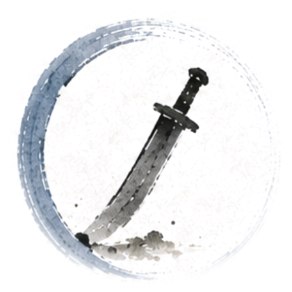Stem signs</figure>
    <figure>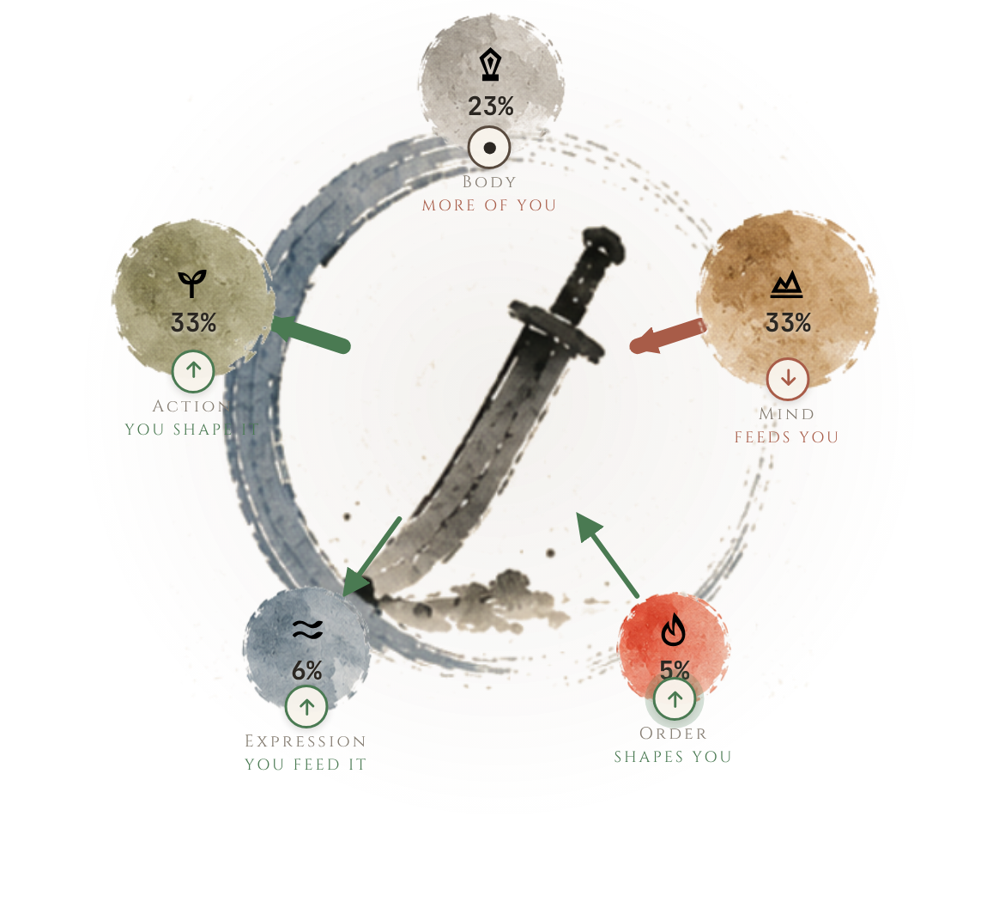Dominance wheel</figure>
  </div>
  <p class="note" style="margin-top:10px">Also fixed: the locked relation labels (feeds you · shapes you · you feed it · you shape it · more of you), the Grow / Release pair, the chop-red seal at most once per screen, and no italic anywhere.</p>
</section>

<section>
  <div class="sec-head"><span class="han">今</span><h2>The app today</h2></div>
  <p>Captured from the running app at 390 × 844 with the golden chart (庚 The Blade, 1995-04-29 18:00 Beijing, Overfueled) and an Underfueled sample (乙 The Vine, 1990-09-17 05:00). Swipe the shelf.</p>
  <div class="shelf" tabindex="0" aria-label="Current app screens">
    <figure>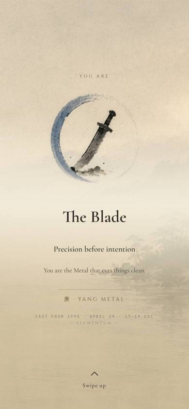<figcaption>The Naming</figcaption></figure>
    <figure>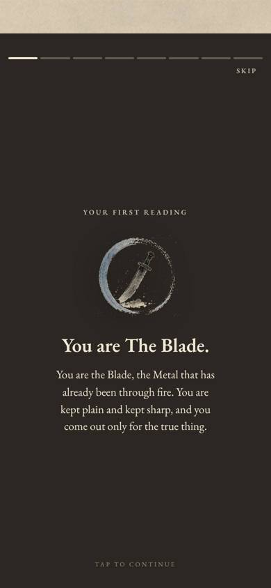<figcaption>First reading, card 1 of 8</figcaption></figure>
    <figure>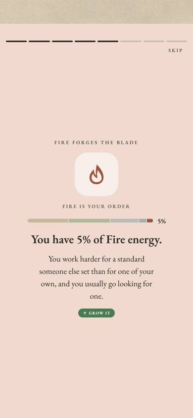<figcaption>First reading, an energy card</figcaption></figure>
    <figure>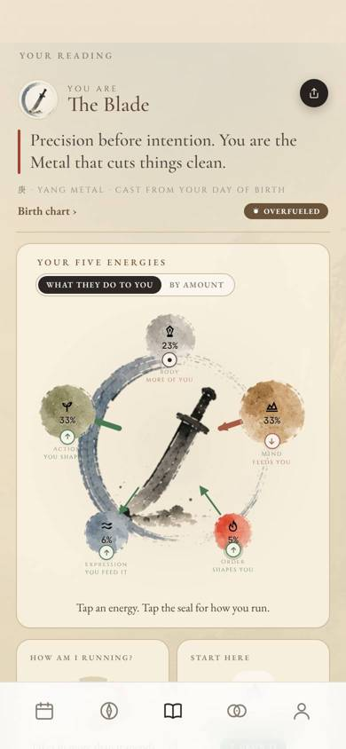<figcaption>Your reading, beats 1–2</figcaption></figure>
    <figure>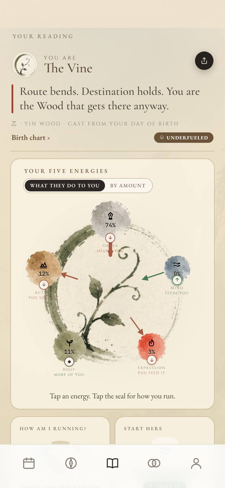<figcaption>Underfueled sample</figcaption></figure>
    <figure>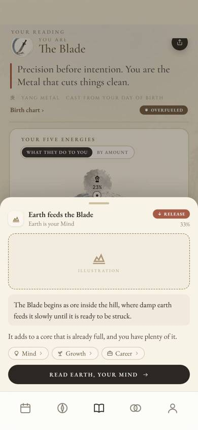<figcaption>Energy sheet</figcaption></figure>
    <figure>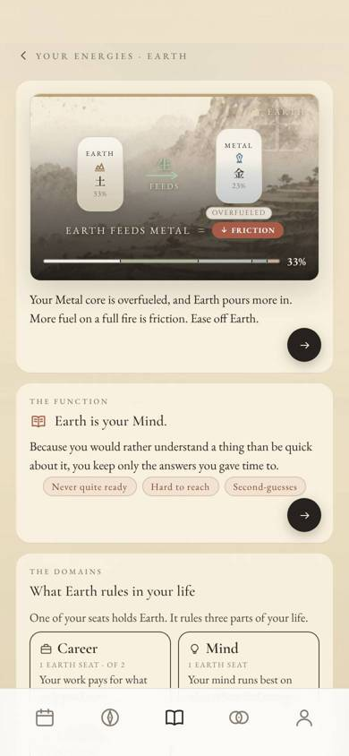<figcaption>Energy page</figcaption></figure>
    <figure>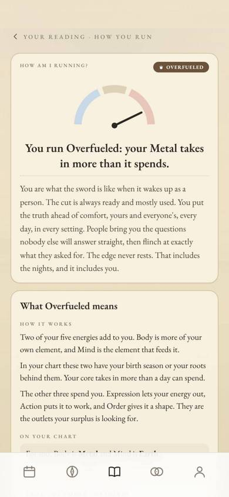<figcaption>How am I running?</figcaption></figure>
    <figure>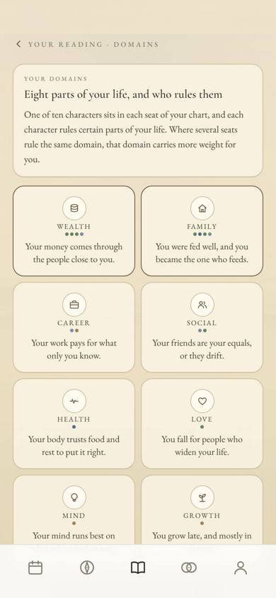<figcaption>Domains</figcaption></figure>
    <figure>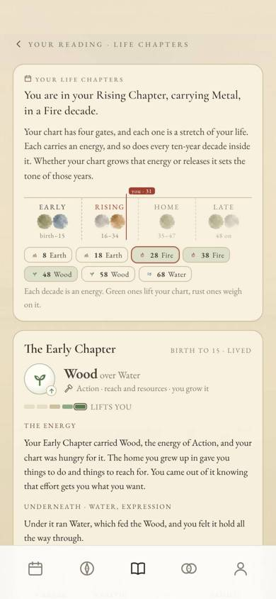<figcaption>Life Chapters</figcaption></figure>
    <figure>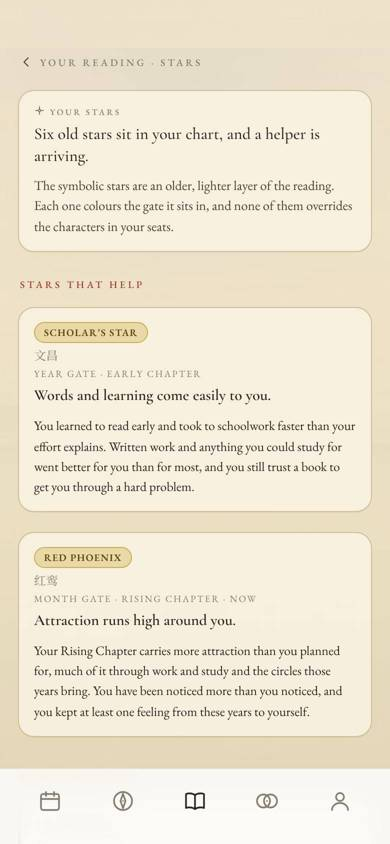<figcaption>Stars</figcaption></figure>
    <figure>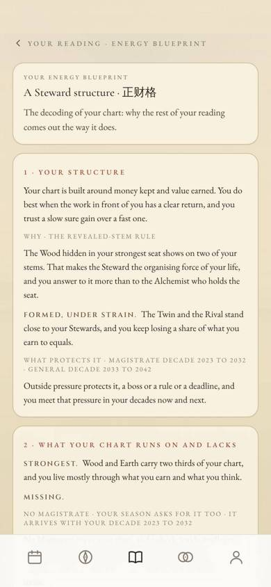<figcaption>Blueprint</figcaption></figure>
    <figure>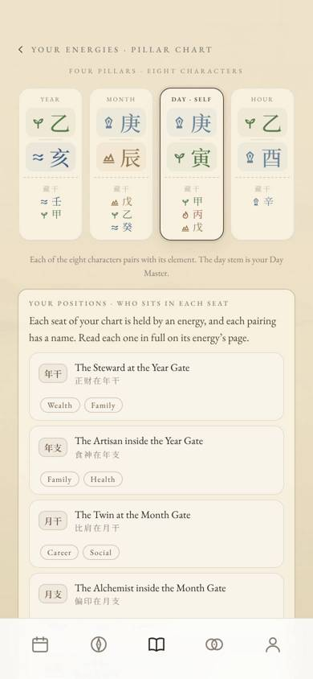<figcaption>Birth chart</figcaption></figure>
    <figure>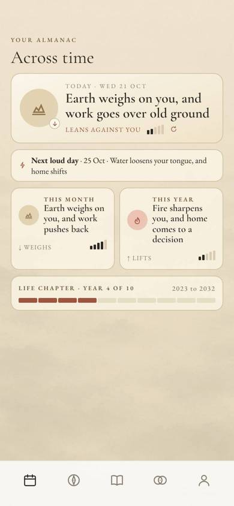<figcaption>Your Almanac hub</figcaption></figure>
    <figure>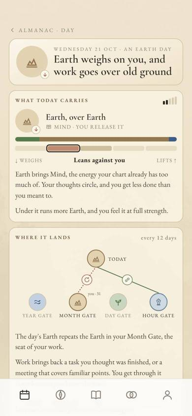<figcaption>Almanac · Day</figcaption></figure>
    <figure>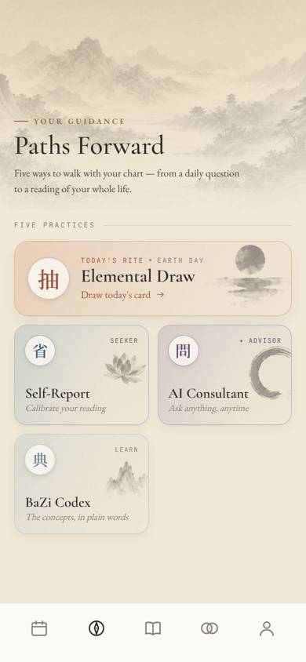<figcaption>Guidance</figcaption></figure>
  </div>

  <div class="card">
    <h3>What I found walking it</h3>
    <div class="finding"><span class="tag keep">Keep</span><div>The Naming and the eight-card first reading already work like a story: one idea per card, segmented progress, tap to advance. This is the strongest pattern in the app and the model for the rest.</div></div>
    <div class="finding"><span class="tag keep">Keep</span><div>The energy sheet is the right weight for a quick look: one claim, one image line, three domains and one way forward.</div></div>
    <div class="finding"><span class="tag fix">Pacing</span><div>Your reading is one long scroll of seven beats. Beats 4–7 (Domains, Life Chapters, Stars, Blueprint) arrive as text tiles with eight chip labels each, so the page reads as a list of words below the wheel. The eye has no image to land on after the wheel.</div></div>
    <div class="finding"><span class="tag fix">Pacing</span><div>The depth pages are very long single scrolls: Life Chapters is about 7,400 characters, Blueprint 3,500, Stars 5,000, with no sense of where you are or how much is left.</div></div>
    <div class="finding"><span class="tag fix">Wayfinding</span><div>Icon-only tabs (locked by §AM.2) carry no name, and the Reading tab holds both the static chart and the depth sections while the Almanac holds time. A reader has no map of what exists until they scroll to it.</div></div>
    <div class="finding"><span class="tag gap">Art gap</span><div>The energy sheet still shows a dashed "illustration" placeholder on the dev site (backlog GO-2). The app already ships 59 painted plates in <code>concept-arts/library</code> that the reading surfaces barely use.</div></div>
    <div class="finding"><span class="tag bug">Bug</span><div>The Guidance tiles render their subtitles in italic ("Calibrate your reading", "Ask anything, anytime"). That breaks the no-italic law. Four live sites still set italic in code: <code>guidance/InkTile.jsx</code>, <code>tabs/CompatScreen.jsx</code> (two) and <code>reading/DayMasterCta.jsx</code>.</div></div>
    <div class="finding"><span class="tag bug">Bug</span><div>On the wheel, the function label under a left-hand node is cut off by the center painting (golden: "Action · you shape it" reads "Action · you shap"; Vine: "Action" reads "Act"). It is a stacking-order issue, not the wheel's design.</div></div>
  </div>
</section>

<section>
  <div class="sec-head"><span class="han">鑑</span><h2>Eleven reference apps</h2></div>
  <p>For each app: what it does, what we take, and what we leave. The take is always translated into our own materials.</p>

  <div class="grid2">
    <div class="card app"><h3>Co-Star<small>ASTROLOGY</small></h3><dl>
      <dt>DOES</dt><dd>A stark daily Do / Don't list, etched black-and-white plates as section breaks, small "Details" links to go deeper.</dd>
      <dt>TAKE</dt><dd class="take">One short verdict a day, set larger than its explanation. Our Almanac line "Earth weighs on you, and work goes over old ground" is already this.</dd>
      <dt>LEAVE</dt><dd class="leave">Low-contrast grey text, centred body copy, hidden swipe gestures, tiny "Details" links that critics say nobody finds.</dd></dl></div>

    <div class="card app"><h3>The Pattern<small>ASTROLOGY</small></h3><dl>
      <dt>DOES</dt><dd>Three tabs. Each insight is a summary card with a "Go deeper" button. Timing cycles sit in a vertical list with a date control.</dd>
      <dt>TAKE</dt><dd class="take">Every tile is a claim plus a door. Time as a list of named windows, which is how our Life Chapters and loud days already speak.</dd>
      <dt>LEAVE</dt><dd class="leave">Snippets that end in a paywall on every card. Reviews punish it.</dd></dl></div>

    <div class="card app"><h3>CHANI<small>ASTROLOGY</small></h3><dl>
      <dt>DOES</dt><dd>Today / This week / This year scopes. The natal chart read planet by planet, each with gifts and challenges. Lesson one of any course is free.</dd>
      <dt>TAKE</dt><dd class="take">Read the chart one body at a time with gifts and costs. We read energy by energy, and our Run page already has Gifts and Costs. The first leaf of every deep section stays free.</dd>
      <dt>LEAVE</dt><dd class="leave">Collage styling. It is a different world from ink wash.</dd></dl></div>

    <div class="card app"><h3>Nebula<small>ASTROLOGY</small></h3><dl>
      <dt>DOES</dt><dd>A long quiz funnel and a paywall about 44 seconds in, upsells inside free screens.</dd>
      <dt>TAKE</dt><dd class="take">Nothing to copy. It is the clearest record of what makes readers distrust an astrology app.</dd>
      <dt>LEAVE</dt><dd class="leave">Early paywalls, disguised upsells, repeating predictions.</dd></dl></div>

    <div class="card app"><h3>Sanctuary<small>ASTROLOGY</small></h3><dl>
      <dt>DOES</dt><dd>Daily, weekly, monthly and annual horoscopes plus paid live chats with astrologers.</dd>
      <dt>TAKE</dt><dd class="take">Four time scopes, each a short bite. Our Almanac is Day, Month, Year and Decade.</dd>
      <dt>LEAVE</dt><dd class="leave">Confusing credits next to subscriptions. One tier ladder only (Free, Seeker, Advisor).</dd></dl></div>

    <div class="card app"><h3>Headspace<small>WELLBEING</small></h3><dl>
      <dt>DOES</dt><dd>Removed its category tabs after research and replaced them with one Today feed of one-tap sessions grouped by morning, afternoon and night. The library moved to Explore.</dd>
      <dt>TAKE</dt><dd class="take">"Simple at the surface, deep underneath." The first screen of each tab answers one question; depth is one tap down.</dd>
      <dt>LEAVE</dt><dd class="leave">A Start button that blends into the background. Our one action stays the black circle arrow.</dd></dl></div>

    <div class="card app"><h3>Calm<small>WELLBEING</small></h3><dl>
      <dt>DOES</dt><dd>Home, Collections, Discover, Profile. "Taptivities" (2024) are tap-through story exercises of one or two minutes.</dd>
      <dt>TAKE</dt><dd class="take">Story format works in a calm app, not only in social media. It is the precedent for turning a long section into leaves.</dd>
      <dt>LEAVE</dt><dd class="leave">Auto-advance. Text cards in Elementum never move on by themselves.</dd></dl></div>

    <div class="card app"><h3>Finch<small>WELLBEING</small></h3><dl>
      <dt>DOES</dt><dd>Progress is tied to the user's own effort, never to punishment. The primary button keeps the same place, size and colour on every screen.</dd>
      <dt>TAKE</dt><dd class="take">Gentle progress: a seal is stamped when a section is read, nothing is lost if you skip. One button, always in the same place.</dd>
      <dt>LEAVE</dt><dd class="leave">Asking for everything at once during onboarding. A cluttered home.</dd></dl></div>

    <div class="card app"><h3>Stoic<small>JOURNALING</small></h3><dl>
      <dt>DOES</dt><dd>Home is the date, one quote and two cards: Morning (light, sun) and Evening (dark, moon).</dd>
      <dt>TAKE</dt><dd class="take">A daily surface with very few objects and a clear time-of-day rhythm. Today's line plus one door into the day.</dd>
      <dt>LEAVE</dt><dd class="leave">A full dark mode switch. Our paper stays paper; the evening can deepen the wash instead.</dd></dl></div>

    <div class="card app"><h3>Medium and Substack<small>READING</small></h3><dl>
      <dt>DOES</dt><dd>"X min read" at 265 words a minute, 500 characters a minute for Chinese. Substack has a reading queue at the top of Home and swipe to the next post.</dd>
      <dt>TAKE</dt><dd class="take">Every deep section shows its reading time on its tile, and the end of a section hands you to the next one.</dd>
      <dt>LEAVE</dt><dd class="leave">A paywall that cuts a paragraph mid-sentence.</dd></dl></div>

    <div class="card app"><h3>Apple Books<small>READING</small></h3><dl>
      <dt>DOES</dt><dd>Reading Now shows what is in progress with a progress mark. Reading Goals default to five minutes a day with a gentle ring and streak.</dd>
      <dt>TAKE</dt><dd class="take">"Continue where you left off" as the first tile on Your reading, and a quiet record of what has been read.</dd>
      <dt>LEAVE</dt><dd class="leave">Shelves of covers. We have one reader and one chart.</dd></dl></div>
  </div>

  <div class="quiet" style="margin-top:12px">
    <b>Across all eleven.</b> The apps people praise have a small tab bar, one short daily unit, a free first leaf of everything, and paywalls that never hide the conclusion. The apps people complain about gate early, upsell inside free screens and make billing confusing. Our tier law (free headlines and first readings, Seeker and Advisor deeper) already matches the praised group.
  </div>
</section>

<section>
  <div class="sec-head"><span class="han">墨</span><h2>Ink-wash composition</h2></div>
  <p>Five rules from Chinese painting that turn into layout rules. They describe how to place things, so they leave the art itself untouched.</p>

  <div class="ink"><div class="han">留白<small>LIUBAI</small></div><div><h3>The blank is part of the picture</h3><p>Treat the empty paper as a shape. Ma Yuan's single fisherman on a river fills a tenth of the painting. Painters say a composition should be "dense enough that wind cannot pass, open enough to ride a horse through."</p><p><b>In the app:</b> one dense cluster per screen (the wheel, the pillars, a tile grid), with the opposite third left open. Where a single line of meaning can sit in the open space, put it there instead of another card.</p></div></div>

  <div class="ink"><div class="han">三远<small>SAN YUAN</small></div><div><h3>Three distances</h3><p>Guo Xi named three ways to see a landscape: high distance (looking up at a peak), deep distance (ranges layered behind ranges) and level distance (low hills running to the horizon).</p><p><b>In the app:</b> high distance for identity moments (the Naming, a section opener: one tall object, lots of headroom). Deep distance for depth (a sheet that lifts, layers that come forward when tapped). Level distance for time (Life Chapters and the year read as a horizontal strip).</p></div></div>

  <div class="ink"><div class="han">手卷<small>SHOUJUAN</small></div><div><h3>The handscroll is read a section at a time</h3><p>A handscroll was unrolled one arm's width at a time. Each section is a complete picture, and notes from later readers are added at the end.</p><p><b>In the app:</b> a long reading becomes a sequence of segments, each a complete screen. Show progress as a thin rod, not a percentage. Share and save live at the end, like a colophon.</p></div></div>

  <div class="ink"><div class="han">印章<small>YINZHANG</small></div><div><h3>The seal signs the work</h3><p>A seal is a small red mark at the edge of the work: a leading seal at the start, a name seal after the inscription, never larger than the writing beside it.</p><p><b>In the app:</b> our chop-red stays once per screen. Use it as the signature that something is complete: the stamp when a section has been read, the mark on today's date. <span class="chop">庚</span> is the size it should stay.</p></div></div>

  <div class="ink"><div class="han">虚实<small>XU SHI</small></div><div><h3>Void and solid alternate</h3><p>A painting moves between dense brushwork and empty mist. Edges dissolve into paper instead of ending in a line.</p><p><b>In the app:</b> alternate a dense tile, an open single line, then a dense tile again as you scroll. Let section art fade into paper at its edges instead of sitting in a hard box.</p></div></div>
</section>

<section>
  <div class="sec-head"><span class="han">讀</span><h2>Readability on a phone</h2></div>
  <ul class="rules">
    <li><b>35–45</b><span>Characters per line for English body text on a phone (WCAG asks for 80 or fewer; Baymard finds 50–75 comfortable on desktop). At 390 wide with 22 px margins, EB Garamond at 17 px gives about 42.</span></li>
    <li><b>17 px · 1.6</b><span>Body size and line height for reading copy. Apple's body text default is 17 pt. Serif faces need a little more leading than sans faces.</span></li>
    <li><b>44 × 44</b><span>Minimum tap target. Our role pills are 8.5 px type, so the pill needs a larger invisible hit area around it.</span></li>
    <li><b>3–4</b><span>Swipes to reach the end of a carousel (NN/g). Show a peek of the next card; dots alone are a weak cue. Put the best item first.</span></li>
    <li><b>Sheets</b><span>NN/g: bottom sheets are for short, transient details. Long reading belongs on a full page. Always show a close control and do not stack sheets. Our rule: a definition or one energy in a sheet, a section in a page.</span></li>
    <li><b>Layer cake</b><span>Readers scan headings first. Every section needs a heading that is a complete claim on its own ("Wealth and Family carry the most weight in your life"), which the app's corpus already writes.</span></li>
    <li><b>265 wpm</b><span>Medium's reading-time rate; 500 characters a minute for Chinese. Life Chapters at about 1,300 words is a 5-minute read; it should say so.</span></li>
    <li><b>Stories</b><span>Segmented bar, tap right to advance, tap left to go back, hold to pause. Never auto-advance text.</span></li>
  </ul>
</section>

<section>
  <div class="sec-head"><span class="han">則</span><h2>Ten principles</h2></div>
  <p>These are the rules every variant is built on. Variants differ in how they apply them.</p>

  <div class="principle"><div class="n">I</div><div><h3>A conclusion on every tile face</h3><p>Every teaser tile carries a personal claim from the corpus, never a category name alone. This is DES_04 §0's payoff-latency law, applied to tiles.</p><div class="src">From: The Pattern, Co-Star, our D13 field test.</div></div></div>
  <div class="principle"><div class="n">II</div><div><h3>A picture before a paragraph</h3><p>Each tile leads with an existing visual (the wheel, an element plate, the dial, the life strip, a stem seal) and holds at most two lines of text. The paragraph waits behind the tap.</p><div class="src">From: the owner's brief, Calm, Apple Books.</div></div></div>
  <div class="principle"><div class="n">III</div><div><h3>Three depths, one rule for each</h3><p>Tile (glance) → sheet (one energy or one word, under 80 words) → page (a section). Never a sheet on a sheet; never a page for a definition.</p><div class="src">From: NN/g on bottom sheets, CHANI.</div></div></div>
  <div class="principle"><div class="n">IV</div><div><h3>Long sections read in leaves</h3><p>Sections over about 500 words are broken into leaves the reader moves through, with visible progress and a reading time, like a handscroll unrolled.</p><div class="src">From: 手卷 pacing, Calm Taptivities, the app's own first reading.</div></div></div>
  <div class="principle"><div class="n">V</div><div><h3>Always a next step</h3><p>The end of every page names the next section and opens it in one tap. The reader never has to go back up to find more.</p><div class="src">From: Substack's reading queue, Medium.</div></div></div>
  <div class="principle"><div class="n">VI</div><div><h3>Know where you are</h3><p>A map of the whole reading is visible from Your reading: what exists, what you have read, what is next. Progress is a thin rod or a stamped seal, never a percentage score.</p><div class="src">From: Apple Books, Finch, 手卷.</div></div></div>
  <div class="principle"><div class="n">VII</div><div><h3>One dense object per screen, the rest open</h3><p>One focal cluster and one raster focal point per screen (DES_14 §0). The open paper carries a single line where it helps.</p><div class="src">From: 留白, 虚实.</div></div></div>
  <div class="principle"><div class="n">VIII</div><div><h3>Time is horizontal, the self is vertical</h3><p>Chapters, decades, months and days scroll or step sideways. The reading of who you are scrolls down.</p><div class="src">From: 平远 level distance, The Pattern's timing list.</div></div></div>
  <div class="principle"><div class="n">IX</div><div><h3>The seal signs completion</h3><p>Chop-red appears once per screen and only to sign something: a section read, today's date, the identity plate.</p><div class="src">From: 印章, Finch.</div></div></div>
  <div class="principle"><div class="n">X</div><div><h3>Free conclusions, paid depth</h3><p>Every headline and the first leaf of every section are free. Locks show what is behind them by name and never cut a sentence.</p><div class="src">From: CHANI, the reviews of Nebula and The Pattern, DES_04 §19.</div></div></div>
</section>

<section>
  <div class="sec-head"><span class="han">變</span><h2>How the variants differ</h2></div>
  <p>Four variants, each a whole app. The art, the marks, the stem seals and the wheel are identical in all four.</p>
  <div class="scroll"><table class="axes">
    <tr><th>Variant</th><th>Thesis</th><th>Your reading is</th><th>Long sections</th><th>Navigation</th></tr>
    <tr><td>V1 The Handscroll</td><td>Closest to today. One unrolling reading with a scroll rod.</td><td>One vertical scroll; depth beats become painted tiles</td><td>Pushed pages with section rod</td><td>5 icon tabs + a seal rod on Your reading</td></tr>
    <tr><td>V2 The Album</td><td>A hub of tiles; every section reads like the first reading.</td><td>A bento grid of tiles under the wheel</td><td>Leaves (story format)</td><td>5 icon tabs; tiles open leaf sequences</td></tr>
    <tr><td>V3 The Almanac Home</td><td>Today first; the reading is a book with chapters.</td><td>A contents page with "continue reading"</td><td>Chapters with reading time and stamps</td><td>Today is home; reading as a book</td></tr>
    <tr><td>V4 The Five Gates</td><td>The five energies are the map for everything.</td><td>The wheel, then one leaf per energy, swiped sideways</td><td>Pages filtered by energy</td><td>A five-sign rail on every reading page</td></tr>
  </table></div>
</section>

<section>
  <div class="sec-head"><span class="han">源</span><h2>Sources</h2></div>
  <p class="srcs">screensdesign.com teardowns of Co-Star, The Pattern, CHANI, Nebula and Finch · ixd.prattsi.org design critiques (Co-Star 2022 and 2024, Finch 2025 and 2026, Headspace 2026) · developer.apple.com/news/?id=fkfnhq8u (Headspace Today) · calm.com/blog/new-look-more-calm · techcrunch.com 2024-08-28 (Calm Taptivities) and 2023-09-20 (Substack redesign) · mobilesyrup.com (Stoic 2019, Apple Books 2018) · help.medium.com read-time article · nngroup.com on mobile carousels, bottom sheets, F-pattern and text-scanning patterns · w3.org WCAG 2.1 1.4.8 · baymard.com line length · Met Museum essay on East Asian painting formats · Columbia JAANUS entry on sanen (三远) · University of Washington Chinese painting techniques. Some app findings come from secondary sources and older app versions; the variants rely on patterns that were confirmed in more than one source.</p>
</section>
</main>
<svg width="0" height="0" style="position:absolute" aria-hidden="true"><defs><symbol id="jny-el-metal" viewBox="0 0 24 24"><path fill="currentColor" fill-rule="evenodd" clip-rule="evenodd" d="M12 2.35L18.15 8.05L14.35 17.15H16.45V20.85H7.55V17.15H9.65L5.85 8.05L12 2.35ZM8.25 8.75L11.1 17.15H12.9L15.75 8.75L12 5.4L8.25 8.75ZM10.3 9.15L12 14.65L13.7 9.15L12 7.55L10.3 9.15Z"></path></symbol>
<symbol id="jny-el-wood" viewBox="0 0 24 24"><path fill="currentColor" fill-rule="evenodd" clip-rule="evenodd" d="M10.95 21.15V13.75C7.55 14.15 5.15 12.05 4.35 7.05C8.15 6.75 10.55 8.35 11.85 11.35C13.2 7.25 15.9 5.15 20.05 5.75C19.85 11.3 16.55 13.95 13.05 13.55V21.15H10.95ZM7.15 8.7C7.85 11.05 9.2 12.05 11 11.65C10.15 9.85 8.95 8.85 7.15 8.7ZM17.2 7.85C15.2 8.05 13.9 9.25 13.15 11.45C15.25 11.6 16.65 10.35 17.2 7.85Z"></path></symbol>
<symbol id="jny-el-fire" viewBox="0 0 24 24"><path fill="currentColor" fill-rule="evenodd" clip-rule="evenodd" d="M12.35 2.75C15.85 6.8 18.55 10.35 18.55 14.65C18.55 18.75 15.65 21.25 12 21.25C8.3 21.25 5.45 18.7 5.45 15.05C5.45 12.25 6.9 10 9.55 7.35C9.45 10.05 10.25 12 11.65 13C11.15 9.55 11.4 6.05 12.35 2.75ZM14.95 10.65C16.25 12.45 16.8 13.95 16.8 15.45C16.8 17.85 14.95 19.35 12.1 19.35C9.65 19.35 7.45 17.75 7.45 15.15C7.45 13.75 7.95 12.65 9 11.35C9.3 13.05 10.2 14.25 11.85 15.15L13 15.8L12.75 14.5C12.35 12.45 12.55 10.45 13.2 8.05C13.85 8.95 14.45 9.85 14.95 10.65Z"></path></symbol>
<symbol id="jny-el-earth" viewBox="0 0 24 24"><path fill="currentColor" fill-rule="evenodd" clip-rule="evenodd" d="M3.55 18.2L8.45 9.35L11.45 13.15L15.25 5.6L20.45 18.2H3.55ZM8.8 13L7 16.25H17.45L15.1 10.55L12 16.7L8.8 13Z"></path><path fill="currentColor" d="M3.1 19.5H20.9V21.15H3.1V19.5Z"></path></symbol>
<symbol id="jny-el-water" viewBox="0 0 24 24"><path fill="currentColor" d="M3.65 9.2C5.65 6.95 8.45 6.65 11.05 8.4C13.15 9.8 14.65 9.85 16.25 8.3C17.25 7.35 18.75 7.15 20.35 7.9C18.95 10.65 16.35 12 13.5 11.15C12.45 10.85 11.5 10.35 10.55 9.7C8.7 8.5 6.95 8.65 5.55 10.05C4.9 10.7 4.25 10.35 3.65 9.2Z"></path><path fill="currentColor" d="M3.65 15.15C5.65 12.9 8.45 12.6 11.05 14.35C13.15 15.75 14.65 15.8 16.25 14.25C17.25 13.3 18.75 13.1 20.35 13.85C18.95 16.6 16.35 17.95 13.5 17.1C12.45 16.8 11.5 16.3 10.55 15.65C8.7 14.45 6.95 14.6 5.55 16C4.9 16.65 4.25 16.3 3.65 15.15Z"></path></symbol>
<symbol id="jny-ic-charged" viewBox="0 0 24 24"><g fill="none" stroke="currentColor" stroke-width="1.7" stroke-linecap="round"><circle cx="12" cy="13.5" r="6.2" fill="currentColor" stroke="none"></circle><path d="M12 3.2v2.4M5.2 6.4l1.7 1.7M18.8 6.4l-1.7 1.7"></path></g></symbol>
<symbol id="jny-ic-balanced" viewBox="0 0 24 24"><g fill="none" stroke="currentColor" stroke-width="1.7"><circle cx="12" cy="12" r="7.2"></circle><path d="M4.8 12h14.4" stroke-linecap="round"></path><path d="M12 12a7.2 7.2 0 0 1-7.2 0v0a7.2 7.2 0 0 0 14.4 0v0a7.2 7.2 0 0 1-7.2 0Z" fill="currentColor" stroke="none" transform="translate(0 0.2)"></path></g></symbol>
<symbol id="jny-ic-receptive" viewBox="0 0 24 24"><g fill="none" stroke="currentColor" stroke-width="1.7" stroke-linecap="round"><circle cx="12" cy="12" r="7.2" stroke-dasharray="2.6 3"></circle><circle cx="12" cy="15.2" r="2.1" fill="currentColor" stroke="none"></circle></g></symbol>
<symbol id="jny-ic-channel" viewBox="0 0 24 24"><g fill="none" stroke="currentColor" stroke-width="1.8" stroke-linecap="round" stroke-linejoin="round"><path d="M16.5 4.5v5M16.5 14.5v5"></path><path d="M4 12h14.5M15.2 8.7 18.5 12l-3.3 3.3"></path></g></symbol>
<symbol id="jny-ic-fuel" viewBox="0 0 24 24"><g fill="none" stroke="currentColor" stroke-width="1.8" stroke-linecap="round" stroke-linejoin="round"><circle cx="17.2" cy="12" r="3.4" fill="currentColor" stroke="none"></circle><path d="M3.5 12h8.3M9.2 8.9 12.3 12l-3.1 3.1"></path></g></symbol>
<symbol id="jny-ar-up" viewBox="0 0 24 24"><g stroke="currentColor" stroke-width="2.4" fill="none" stroke-linecap="round" stroke-linejoin="round"><path d="M12 19V6"></path><path d="M6 11l6-6 6 6"></path></g></symbol>
<symbol id="jny-ar-down" viewBox="0 0 24 24"><g stroke="currentColor" stroke-width="2.4" fill="none" stroke-linecap="round" stroke-linejoin="round"><path d="M12 5v13"></path><path d="M6 13l6 6 6-6"></path></g></symbol>
<symbol id="jny-ico-arrow-r" viewBox="0 0 24 24"><g stroke="currentColor" stroke-width="1.6" fill="none" stroke-linecap="round" stroke-linejoin="round"><path d="M5 12 H19"></path><path d="M14 7 L19 12 L14 17"></path></g></symbol>
<symbol id="jny-ico-chev-l" viewBox="0 0 24 24"><path d="M15 6 L9 12 L15 18" stroke="currentColor" stroke-width="1.6" fill="none" stroke-linecap="round" stroke-linejoin="round"></path></symbol>
<symbol id="jny-ico-chev-r" viewBox="0 0 24 24"><path d="M9 6 L15 12 L9 18" stroke="currentColor" stroke-width="1.6" fill="none" stroke-linecap="round" stroke-linejoin="round"></path></symbol>
<symbol id="jny-ico-share" viewBox="0 0 24 24"><g stroke="currentColor" stroke-width="1.7" fill="none" stroke-linecap="round" stroke-linejoin="round"><path d="M12 3v12"></path><path d="M8 7l4-4 4 4"></path><path d="M5 12v7a1.5 1.5 0 0 0 1.5 1.5h11A1.5 1.5 0 0 0 19 19v-7"></path></g></symbol>
<symbol id="jny-ico-close" viewBox="0 0 24 24"><path d="M6 6 L18 18 M18 6 L6 18" stroke="currentColor" stroke-width="1.8" stroke-linecap="round" fill="none"></path></symbol>
<symbol id="jny-ic-codex" viewBox="0 0 24 24"><g fill="none" stroke="currentColor" stroke-width="1.6" stroke-linecap="round" stroke-linejoin="round"><path d="M12 6.4C10.4 5.2 8.2 4.7 5.4 4.9v12c2.8-.2 5 .3 6.6 1.5 1.6-1.2 3.8-1.7 6.6-1.5v-12c-2.8-.2-5 .3-6.6 1.5z"></path><path d="M12 6.4V18.4"></path></g></symbol>
<symbol id="jny-ic-save" viewBox="0 0 24 24"><path d="M12 4v11m0 0l-4-4m4 4l4-4M5 19h14" fill="none" stroke="currentColor" stroke-width="1.7" stroke-linecap="round" stroke-linejoin="round"></path></symbol>
<symbol id="jny-ic-link" viewBox="0 0 24 24"><g fill="none" stroke="currentColor" stroke-width="1.7" stroke-linecap="round" stroke-linejoin="round"><path d="M9.6 14.4l4.8-4.8"></path><path d="M8.2 11.1l-1.9 1.9a3 3 0 0 0 4.24 4.24l1.9-1.9"></path><path d="M15.8 12.9l1.9-1.9a3 3 0 0 0-4.24-4.24l-1.9 1.9"></path></g></symbol>
<symbol id="jny-tab-today" viewBox="0 0 24 24"><g stroke="currentColor" stroke-width="1.7" fill="none" stroke-linecap="round" stroke-linejoin="round"><rect x="3" y="5" width="18" height="16" rx="2"></rect><path d="M3 10h18"></path><path d="M8 3v4"></path><path d="M16 3v4"></path></g></symbol>
<symbol id="jny-tab-guidance" viewBox="0 0 24 24"><g stroke="currentColor" stroke-width="1.7" fill="none" stroke-linecap="round" stroke-linejoin="round"><circle cx="12" cy="12" r="9"></circle><path d="M12 4.8 L14.5 12 L12 19.2 L9.5 12 Z"></path><circle cx="12" cy="12" r="0.9" fill="currentColor" stroke="none"></circle></g></symbol>
<symbol id="jny-tab-reading" viewBox="0 0 24 24"><g stroke="currentColor" stroke-width="1.7" fill="none" stroke-linecap="round" stroke-linejoin="round"><path d="M3 5 C 6 4, 9 4, 12 6 C 15 4, 18 4, 21 5 V19 C 18 18, 15 18, 12 20 C 9 18, 6 18, 3 19 Z"></path><path d="M12 6 V20"></path></g></symbol>
<symbol id="jny-tab-compat" viewBox="0 0 24 24"><g stroke="currentColor" stroke-width="1.7" fill="none" stroke-linecap="round" stroke-linejoin="round"><circle cx="8.5" cy="12" r="6.5"></circle><circle cx="15.5" cy="12" r="6.5"></circle><circle cx="12" cy="12" r="0.9" fill="currentColor" stroke="none"></circle></g></symbol>
<symbol id="jny-tab-profile" viewBox="0 0 24 24"><g stroke="currentColor" stroke-width="1.7" fill="none" stroke-linecap="round" stroke-linejoin="round"><circle cx="12" cy="8" r="4"></circle><path d="M4 21c0-4 3.5-7 8-7s8 3 8 7"></path></g></symbol>
<symbol id="jny-fn-body" viewBox="0 0 24 24"><g stroke="currentColor" stroke-width="1.6" fill="none" stroke-linecap="round" stroke-linejoin="round"><circle cx="12" cy="5.6" r="2.6"></circle><path d="M12 8.4 V14.6"></path><path d="M7.2 12.2 L12 9.8 L16.8 12.2"></path><path d="M12 14.6 L8.6 21"></path><path d="M12 14.6 L15.4 21"></path></g></symbol>
<symbol id="jny-fn-mind" viewBox="0 0 24 24"><g stroke="currentColor" stroke-width="1.6" fill="none" stroke-linecap="round" stroke-linejoin="round"><path d="M12 7.2 C10 5.6 7.2 5.3 3.8 6 V18.6 C7.2 17.9 10 18.2 12 19.8 C14 18.2 16.8 17.9 20.2 18.6 V6 C16.8 5.3 14 5.6 12 7.2 Z"></path><path d="M12 7.2 V19.8"></path><path d="M6.6 9.6 C7.6 9.5 8.6 9.6 9.6 9.9"></path><path d="M6.6 12.6 C7.6 12.5 8.6 12.6 9.6 12.9"></path><path d="M14.4 9.9 C15.4 9.6 16.4 9.5 17.4 9.6"></path><path d="M14.4 12.9 C15.4 12.6 16.4 12.5 17.4 12.6"></path></g></symbol>
<symbol id="jny-fn-expression" viewBox="0 0 24 24"><g stroke="currentColor" stroke-width="1.6" fill="none" stroke-linecap="round" stroke-linejoin="round"><path d="M6.2 4.6 H17.8 A2.4 2.4 0 0 1 20.2 7 V14 A2.4 2.4 0 0 1 17.8 16.4 H10.6 L6.4 19.8 V16.4 H6.2 A2.4 2.4 0 0 1 3.8 14 V7 A2.4 2.4 0 0 1 6.2 4.6 Z"></path><path d="M9.3 12.2 C8.2 11.9 7.9 10.6 8.5 9.7 C9 9 9.9 8.8 10.5 9.3"></path><path d="M14.3 12.2 C13.2 11.9 12.9 10.6 13.5 9.7 C14 9 14.9 8.8 15.5 9.3"></path></g></symbol>
<symbol id="jny-fn-action" viewBox="0 0 24 24"><g stroke="currentColor" stroke-width="1.6" fill="none" stroke-linecap="round" stroke-linejoin="round"><path d="M10.9 5.6 L14.4 2.1 A1.2 1.2 0 0 1 16.1 2.1 L21.9 7.9 A1.2 1.2 0 0 1 21.9 9.6 L18.4 13.1 Z"></path><path d="M12.9 9.4 L4 18.3 A1.5 1.5 0 0 0 4 20.4 L4.4 20.8 A1.5 1.5 0 0 0 6.5 20.8 L14.6 11.1"></path></g></symbol>
<symbol id="jny-fn-order" viewBox="0 0 24 24"><g stroke="currentColor" stroke-width="1.6" fill="none" stroke-linecap="round" stroke-linejoin="round"><path d="M12 4.2 V20"></path><path d="M8.2 20.4 H15.8"></path><path d="M4.6 7.6 H19.4"></path><path d="M6.2 7.6 L3.2 13.6"></path><path d="M6.2 7.6 L9.2 13.6"></path><path d="M3.2 13.6 A3 3 0 0 0 9.2 13.6"></path><path d="M17.8 7.6 L14.8 13.6"></path><path d="M17.8 7.6 L20.8 13.6"></path><path d="M14.8 13.6 A3 3 0 0 0 20.8 13.6"></path></g></symbol>
<symbol id="jny-dom-wealth" viewBox="0 0 24 24"><g stroke="currentColor" stroke-width="1.6" fill="none" stroke-linecap="round" stroke-linejoin="round"><ellipse cx="12" cy="6.5" rx="7" ry="2.6"></ellipse><path d="M5 6.5v5c0 1.4 3.1 2.6 7 2.6s7-1.2 7-2.6v-5"></path><path d="M5 11.5v5c0 1.4 3.1 2.6 7 2.6s7-1.2 7-2.6v-5"></path></g></symbol>
<symbol id="jny-dom-rel" viewBox="0 0 24 24"><g stroke="currentColor" stroke-width="1.6" fill="none" stroke-linecap="round" stroke-linejoin="round"><path d="M8.5 5.2c1.4 0 2.5 1.1 2.5 2.6 0 2.4-2.5 4-4.5 5.4C4.5 11.8 2 10.2 2 7.8c0-1.5 1.1-2.6 2.5-2.6 1 0 1.7.5 2 1.1.3-.6 1-1.1 2-1.1z" transform="translate(2 2)"></path><path d="M15.5 9.2c1.4 0 2.5 1.1 2.5 2.6 0 2.4-2.5 4-4.5 5.4-2-1.4-4.5-3-4.5-5.4 0-1.5 1.1-2.6 2.5-2.6 1 0 1.7.5 2 1.1.3-.6 1-1.1 2-1.1z"></path></g></symbol>
<symbol id="jny-dom-career" viewBox="0 0 24 24"><g stroke="currentColor" stroke-width="1.6" fill="none" stroke-linecap="round" stroke-linejoin="round"><rect x="3.5" y="7.5" width="17" height="12" rx="2"></rect><path d="M8.5 7.5V6a2 2 0 0 1 2-2h3a2 2 0 0 1 2 2v1.5"></path><path d="M3.5 12.5h17"></path></g></symbol>
<symbol id="jny-dom-family" viewBox="0 0 24 24"><g stroke="currentColor" stroke-width="1.6" fill="none" stroke-linecap="round" stroke-linejoin="round"><path d="M4 11.5 12 4.5l8 7"></path><path d="M6.2 10v9.5h11.6V10"></path><path d="M10.2 19.5v-5h3.6v5"></path></g></symbol>
<symbol id="jny-dom-social" viewBox="0 0 24 24"><g stroke="currentColor" stroke-width="1.6" fill="none" stroke-linecap="round" stroke-linejoin="round"><circle cx="9" cy="8.5" r="3"></circle><path d="M3.5 19c0-3.2 2.4-5.5 5.5-5.5s5.5 2.3 5.5 5.5"></path><path d="M15.2 5.8a3 3 0 0 1 0 5.4"></path><path d="M16.8 13.6c2.3.5 3.7 2.5 3.7 5.4"></path></g></symbol>
<symbol id="jny-dom-love" viewBox="0 0 24 24"><g stroke="currentColor" stroke-width="1.6" fill="none" stroke-linecap="round" stroke-linejoin="round"><path d="M12 19.5c-4.2-2.9-8-6.1-8-10 0-2.3 1.7-4 3.9-4 1.6 0 2.9.8 4.1 2.3 1.2-1.5 2.5-2.3 4.1-2.3 2.2 0 3.9 1.7 3.9 4 0 3.9-3.8 7.1-8 10z"></path></g></symbol>
<symbol id="jny-dom-mind" viewBox="0 0 24 24"><g stroke="currentColor" stroke-width="1.6" fill="none" stroke-linecap="round" stroke-linejoin="round"><path d="M9 17.5h6"></path><path d="M10 20h4"></path><path d="M8.6 14.6C7 13.5 6 11.9 6 10a6 6 0 0 1 12 0c0 1.9-1 3.5-2.6 4.6-.6.4-.9 1-.9 1.6v.3H9.5v-.3c0-.6-.3-1.2-.9-1.6z"></path></g></symbol>
<symbol id="jny-dom-growth" viewBox="0 0 24 24"><g stroke="currentColor" stroke-width="1.6" fill="none" stroke-linecap="round" stroke-linejoin="round"><path d="M12 20.5V10.5"></path><path d="M12 13.5c-3.6 0-6-2.2-6.5-6 3.8 0 6.3 2 6.5 6z"></path><path d="M12 11c.3-3.6 2.8-5.6 6.5-5.5-.5 3.8-2.9 5.8-6.5 5.5z"></path><path d="M7 20.5h10"></path></g></symbol>
<symbol id="jny-ico-lock" viewBox="0 0 24 24"><g stroke="currentColor" stroke-width="1.7" fill="none" stroke-linecap="round" stroke-linejoin="round"><rect x="5.5" y="10.5" width="13" height="9.5" rx="2"></rect><path d="M8.5 10.5V7.8a3.5 3.5 0 0 1 7 0v2.7"></path></g></symbol>
<symbol id="jny-dom-health" viewBox="0 0 24 24"><g stroke="currentColor" stroke-width="1.6" fill="none" stroke-linecap="round" stroke-linejoin="round"><path d="M3.5 12.5h3l1.6-4 2.8 8 2.4-6 1.4 2h5.3"></path></g></symbol>
<symbol id="jny-ico-spark" viewBox="0 0 24 24"><g stroke="currentColor" stroke-width="1.6" fill="none" stroke-linecap="round" stroke-linejoin="round"><path d="M12 3.5v4M12 16.5v4M3.5 12h4M16.5 12h4"></path><path d="M12 8.2 13.6 10.4 16 12 13.6 13.6 12 15.8 10.4 13.6 8 12 10.4 10.4Z"></path></g></symbol></defs></svg>
